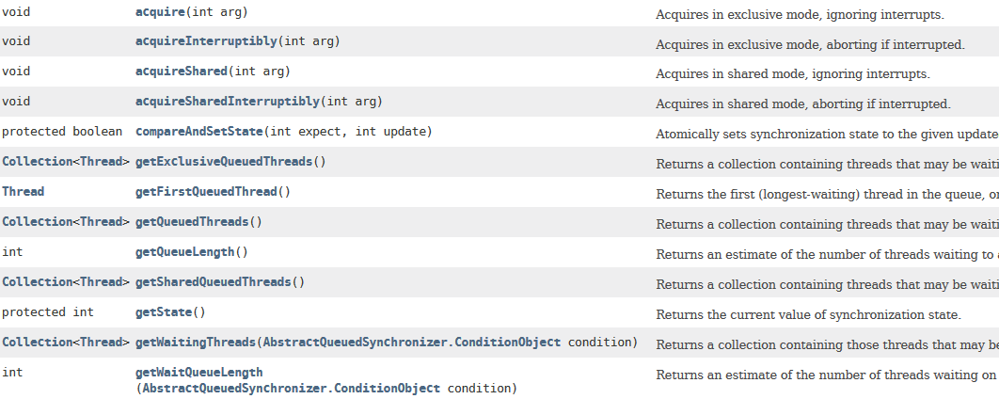

- 00 开篇词 以面试题为切入点，有效提升你的Java内功-极客时间.md
- 01 谈谈你对Java平台的理解？.md
- 02 Exception和Error有什么区别？-极客时间.md
- 03 谈谈final、finally、 finalize有什么不同？-极客时间.md
- 04 强引用、软引用、弱引用、幻象引用有什么区别？-极客时间.md
- 05 String、StringBuffer、StringBuilder有什么区别？-极客时间.md
- 06 动态代理是基于什么原理？-极客时间.md
- 07 int和Integer有什么区别？-极客时间.md
- 08 对比Vector、ArrayList、LinkedList有何区别？-极客时间.md
- 09 对比Hashtable、HashMap、TreeMap有什么不同？-极客时间.md
- 10 如何保证集合是线程安全的 ConcurrentHashMap如何实现高效地线程安全？-极客时间.md
- 11 Java提供了哪些IO方式？ NIO如何实现多路复用？-极客时间.md
- 12 Java有几种文件拷贝方式？哪一种最高效？-极客时间.md
- 13 谈谈接口和抽象类有什么区别？-极客时间.md
- 14 谈谈你知道的设计模式？-极客时间.md
- 15 synchronized和ReentrantLock有什么区别呢？-极客时间.md
- 16 synchronized底层如何实现？什么是锁的升级、降级？-极客时间.md
- 17 一个线程两次调用start()方法会出现什么情况？-极客时间.md
- 18 什么情况下Java程序会产生死锁？如何定位、修复？-极客时间.md
- 19 Java并发包提供了哪些并发工具类？-极客时间.md
- 20 并发包中的ConcurrentLinkedQueue和LinkedBlockingQueue有什么区别？-极客时间.md
- 21 Java并发类库提供的线程池有哪几种？ 分别有什么特点？-极客时间.md
- 22 AtomicInteger底层实现原理是什么？如何在自己的产品代码中应用CAS操作？-极客时间.md
- 23 请介绍类加载过程，什么是双亲委派模型？-极客时间.md
- 24 有哪些方法可以在运行时动态生成一个Java类？-极客时间.md
- 25 谈谈JVM内存区域的划分，哪些区域可能发生OutOfMemoryError-极客时间.md
- 26 如何监控和诊断JVM堆内和堆外内存使用？-极客时间.md
- 27 Java常见的垃圾收集器有哪些？-极客时间.md
- 28 谈谈你的GC调优思路-极客时间.md
- 29 Java内存模型中的happen-before是什么？-极客时间.md
- 30 Java程序运行在Docker等容器环境有哪些新问题？-极客时间.md
- 31 你了解Java应用开发中的注入攻击吗？-极客时间.md
- 32 如何写出安全的Java代码？-极客时间.md
- 33 后台服务出现明显“变慢”，谈谈你的诊断思路？-极客时间.md
- 34 有人说“Lambda能让Java程序慢30倍”，你怎么看？-极客时间.md
- 35 JVM优化Java代码时都做了什么？-极客时间.md
- 36 谈谈MySQL支持的事务隔离级别，以及悲观锁和乐观锁的原理和应用场景？-极客时间.md
- 37 谈谈Spring Bean的生命周期和作用域？-极客时间.md
- 38 对比Java标准NIO类库，你知道Netty是如何实现更高性能的吗？-极客时间.md
- 39 谈谈常用的分布式ID的设计方案？Snowflake是否受冬令时切换影响？-极客时间.md
- 周末福利 一份Java工程师必读书单-极客时间.md
- 周末福利 谈谈我对Java学习和面试的看法-极客时间.md
- 结束语 技术没有终点-极客时间.md
22 AtomicInteger底层实现原理是什么？如何在自己的产品代码中应用CAS操作？-极客时间
在今天这一讲中，我来分析一下并发包内部的组成，一起来看看各种同步结构、线程池等，是基于什么原理来设计和实现的。
今天我要问你的问题是，AtomicInteger 底层实现原理是什么？如何在自己的产品代码中应用 CAS 操作？
典型回答
AtomicIntger 是对 int 类型的一个封装，提供原子性的访问和更新操作，其原子性操作的实现是基于 CAS（compare-and-swap）技术。
所谓 CAS，表征的是一系列操作的集合，获取当前数值，进行一些运算，利用 CAS 指令试图进行更新。如果当前数值未变，代表没有其他线程进行并发修改，则成功更新。否则，可能出现不同的选择，要么进行重试，要么就返回一个成功或者失败的结果。
从 AtomicInteger 的内部属性可以看出，它依赖于 Unsafe 提供的一些底层能力，进行底层操作；以 volatile 的 value 字段，记录数值，以保证可见性。
private static final jdk.internal.misc.Unsafe U = jdk.internal.misc.Unsafe.getUnsafe();
private static final long VALUE = U.objectFieldOffset(AtomicInteger.class, "value");
private volatile int value;
具体的原子操作细节，可以参考任意一个原子更新方法，比如下面的 getAndIncrement。
Unsafe 会利用 value 字段的内存地址偏移，直接完成操作。
public final int getAndIncrement() {
return U.getAndAddInt(this, VALUE, 1);
}
因为 getAndIncrement 需要返归数值，所以需要添加失败重试逻辑。
public final int getAndAddInt(Object o, long offset, int delta) {
int v;
do {
v = getIntVolatile(o, offset);
} while (!weakCompareAndSetInt(o, offset, v, v + delta));
return v;
}
而类似 compareAndSet 这种返回 boolean 类型的函数，因为其返回值表现的就是成功与否，所以不需要重试。
public final boolean compareAndSet(int expectedValue, int newValue)
CAS 是 Java 并发中所谓 lock-free 机制的基础。
考点分析
今天的问题有点偏向于 Java 并发机制的底层了，虽然我们在开发中未必会涉及 CAS 的实现层面，但是理解其机制，掌握如何在 Java 中运用该技术，还是十分有必要的，尤其是这也是个并发编程的面试热点。
有的同学反馈面试官会问 CAS 更加底层是如何实现的，这依赖于 CPU 提供的特定指令，具体根据体系结构的不同还存在着明显区别。比如，x86 CPU 提供 cmpxchg 指令；而在精简指令集的体系架构中，则通常是靠一对儿指令（如“load and reserve”和“store conditional”）实现的，在大多数处理器上 CAS 都是个非常轻量级的操作，这也是其优势所在。
大部分情况下，掌握到这个程度也就够用了，我认为没有必要让每个 Java 工程师都去了解到指令级别，我们进行抽象、分工就是为了让不同层面的开发者在开发中，可以尽量屏蔽不相关的细节。
如果我作为面试官，很有可能深入考察这些方向：
- 在什么场景下，可以采用 CAS 技术，调用 Unsafe 毕竟不是大多数场景的最好选择，有没有更加推荐的方式呢？毕竟我们掌握一个技术，cool 不是目的，更不是为了应付面试，我们还是希望能在实际产品中有价值。
- 对 ReentrantLock、CyclicBarrier 等并发结构底层的实现技术的理解。
知识扩展
关于 CAS 的使用，你可以设想这样一个场景：在数据库产品中，为保证索引的一致性，一个常见的选择是，保证只有一个线程能够排他性地修改一个索引分区，如何在数据库抽象层面实现呢？
可以考虑为索引分区对象添加一个逻辑上的锁，例如，以当前独占的线程 ID 作为锁的数值，然后通过原子操作设置 lock 数值，来实现加锁和释放锁，伪代码如下：
public class AtomicBTreePartition {
private volatile long lock;
public void acquireLock(){}
public void releaseeLock(){}
}
那么在 Java 代码中，我们怎么实现锁操作呢？Unsafe 似乎不是个好的选择，例如，我就注意到类似 Cassandra 等产品，因为 Java 9 中移除了 Unsafe.moniterEnter()/moniterExit()，导致无法平滑升级到新的 JDK 版本。目前 Java 提供了两种公共 API，可以实现这种 CAS 操作，比如使用 java.util.concurrent.atomic.AtomicLongFieldUpdater，它是基于反射机制创建，我们需要保证类型和字段名称正确。
private static final AtomicLongFieldUpdater<AtomicBTreePartition> lockFieldUpdater =
AtomicLongFieldUpdater.newUpdater(AtomicBTreePartition.class, "lock");
private void acquireLock(){
long t = Thread.currentThread().getId();
while (!lockFieldUpdater.compareAndSet(this, 0L, t)){
// 等待一会儿，数据库操作可能比较慢
…
}
}
Atomic 包提供了最常用的原子性数据类型，甚至是引用、数组等相关原子类型和更新操作工具，是很多线程安全程序的首选。
我在专栏第七讲中曾介绍使用原子数据类型和 Atomic*FieldUpdater，创建更加紧凑的计数器实现，以替代 AtomicLong。优化永远是针对特定需求、特定目的，我这里的侧重点是介绍可能的思路，具体还是要看需求。如果仅仅创建一两个对象，其实完全没有必要进行前面的优化，但是如果对象成千上万或者更多，就要考虑紧凑性的影响了。而 atomic 包提供的LongAdder，在高度竞争环境下，可能就是比 AtomicLong 更佳的选择，尽管它的本质是空间换时间。
回归正题，如果是 Java 9 以后，我们完全可以采用另外一种方式实现，也就是 Variable Handle API，这是源自于JEP 193，提供了各种粒度的原子或者有序性的操作等。我将前面的代码修改为如下实现：
private static final VarHandle HANDLE = MethodHandles.lookup().findStaticVarHandle
(AtomicBTreePartition.class, "lock");
private void acquireLock(){
long t = Thread.currentThread().getId();
while (!HANDLE.compareAndSet(this, 0L, t)){
// 等待一会儿，数据库操作可能比较慢
…
}
}
过程非常直观，首先，获取相应的变量句柄，然后直接调用其提供的 CAS 方法。
一般来说，我们进行的类似 CAS 操作，可以并且推荐使用 Variable Handle API 去实现，其提供了精细粒度的公共底层 API。我这里强调公共，是因为其 API 不会像内部 API 那样，发生不可预测的修改，这一点提供了对于未来产品维护和升级的基础保障，坦白说，很多额外工作量，都是源于我们使用了 Hack 而非 Solution 的方式解决问题。
CAS 也并不是没有副作用，试想，其常用的失败重试机制，隐含着一个假设，即竞争情况是短暂的。大多数应用场景中，确实大部分重试只会发生一次就获得了成功，但是总是有意外情况，所以在有需要的时候，还是要考虑限制自旋的次数，以免过度消耗 CPU。
另外一个就是著名的ABA问题，这是通常只在 lock-free 算法下暴露的问题。我前面说过 CAS 是在更新时比较前值，如果对方只是恰好相同，例如期间发生了 A -> B -> A 的更新，仅仅判断数值是 A，可能导致不合理的修改操作。针对这种情况，Java 提供了 AtomicStampedReference 工具类，通过为引用建立类似版本号（stamp）的方式，来保证 CAS 的正确性，具体用法请参考这里的介绍。
前面介绍了 CAS 的场景与实现，幸运的是，大多数情况下，Java 开发者并不需要直接利用 CAS 代码去实现线程安全容器等，更多是通过并发包等间接享受到 lock-free 机制在扩展性上的好处。
下面我来介绍一下 AbstractQueuedSynchronizer（AQS），其是 Java 并发包中，实现各种同步结构和部分其他组成单元（如线程池中的 Worker）的基础。
学习 AQS，如果上来就去看它的一系列方法（下图所示），很有可能把自己看晕，这种似懂非懂的状态也没有太大的实践意义。

我建议的思路是，尽量简化一下，理解为什么需要 AQS，如何使用 AQS，至少要做什么，再进一步结合 JDK 源代码中的实践，理解 AQS 的原理与应用。
Doug Lea曾经介绍过 AQS 的设计初衷。从原理上，一种同步结构往往是可以利用其他的结构实现的，例如我在专栏第 19 讲中提到过可以使用 Semaphore 实现互斥锁。但是，对某种同步结构的倾向，会导致复杂、晦涩的实现逻辑，所以，他选择了将基础的同步相关操作抽象在 AbstractQueuedSynchronizer 中，利用 AQS 为我们构建同步结构提供了范本。
AQS 内部数据和方法，可以简单拆分为：
- 一个 volatile 的整数成员表征状态，同时提供了 setState 和 getState 方法
private volatile int state;
- 一个先入先出（FIFO）的等待线程队列，以实现多线程间竞争和等待，这是 AQS 机制的核心之一。
- 各种基于 CAS 的基础操作方法，以及各种期望具体同步结构去实现的 acquire/release 方法。
利用 AQS 实现一个同步结构，至少要实现两个基本类型的方法，分别是 acquire 操作，获取资源的独占权；还有就是 release 操作，释放对某个资源的独占。
以 ReentrantLock 为例，它内部通过扩展 AQS 实现了 Sync 类型，以 AQS 的 state 来反映锁的持有情况。
private final Sync sync;
abstract static class Sync extends AbstractQueuedSynchronizer { …}
下面是 ReentrantLock 对应 acquire 和 release 操作，如果是 CountDownLatch 则可以看作是 await()/countDown()，具体实现也有区别。
public void lock() {
sync.acquire(1);
}
public void unlock() {
sync.release(1);
}
排除掉一些细节，整体地分析 acquire 方法逻辑，其直接实现是在 AQS 内部，调用了 tryAcquire 和 acquireQueued，这是两个需要搞清楚的基本部分。
public final void acquire(int arg) {
if (!tryAcquire(arg) &&
acquireQueued(addWaiter(Node.EXCLUSIVE), arg))
selfInterrupt();
}
首先，我们来看看 tryAcquire。在 ReentrantLock 中，tryAcquire 逻辑实现在 NonfairSync 和 FairSync 中，分别提供了进一步的非公平或公平性方法，而 AQS 内部 tryAcquire 仅仅是个接近未实现的方法（直接抛异常），这是留个实现者自己定义的操作。
我们可以看到公平性在 ReentrantLock 构建时如何指定的，具体如下：
public ReentrantLock() {
sync = new NonfairSync(); // 默认是非公平的
}
public ReentrantLock(boolean fair) {
sync = fair ? new FairSync() : new NonfairSync();
}
以非公平的 tryAcquire 为例，其内部实现了如何配合状态与 CAS 获取锁，注意，对比公平版本的 tryAcquire，它在锁无人占有时，并不检查是否有其他等待者，这里体现了非公平的语义。
final boolean nonfairTryAcquire(int acquires) {
final Thread current = Thread.currentThread();
int c = getState();// 获取当前AQS内部状态量
if (c == 0) { // 0表示无人占有，则直接用CAS修改状态位，
if (compareAndSetState(0, acquires)) {// 不检查排队情况，直接争抢
setExclusiveOwnerThread(current); //并设置当前线程独占锁
return true;
}
} else if (current == getExclusiveOwnerThread()) { //即使状态不是0，也可能当前线程是锁持有者，因为这是再入锁
int nextc = c + acquires;
if (nextc < 0) // overflow
throw new Error("Maximum lock count exceeded");
setState(nextc);
return true;
}
return false;
}
接下来我再来分析 acquireQueued，如果前面的 tryAcquire 失败，代表着锁争抢失败，进入排队竞争阶段。这里就是我们所说的，利用 FIFO 队列，实现线程间对锁的竞争的部分，算是是 AQS 的核心逻辑。
当前线程会被包装成为一个排他模式的节点（EXCLUSIVE），通过 addWaiter 方法添加到队列中。acquireQueued 的逻辑，简要来说，就是如果当前节点的前面是头节点，则试图获取锁，一切顺利则成为新的头节点；否则，有必要则等待，具体处理逻辑请参考我添加的注释。
final boolean acquireQueued(final Node node, int arg) {
boolean interrupted = false;
try {
for (;;) {// 循环
final Node p = node.predecessor();// 获取前一个节点
if (p == head && tryAcquire(arg)) { // 如果前一个节点是头结点，表示当前节点合适去tryAcquire
setHead(node); // acquire成功，则设置新的头节点
p.next = null; // 将前面节点对当前节点的引用清空
return interrupted;
}
if (shouldParkAfterFailedAcquire(p, node)) // 检查是否失败后需要park
interrupted |= parkAndCheckInterrupt();
}
} catch (Throwable t) {
cancelAcquire(node);// 出现异常，取消
if (interrupted)
selfInterrupt();
throw t;
}
}
到这里线程试图获取锁的过程基本展现出来了，tryAcquire 是按照特定场景需要开发者去实现的部分，而线程间竞争则是 AQS 通过 Waiter 队列与 acquireQueued 提供的，在 release 方法中，同样会对队列进行对应操作。
今天我介绍了 Atomic 数据类型的底层技术 CAS，并通过实例演示了如何在产品代码中利用 CAS，最后介绍了并发包的基础技术 AQS，希望对你有所帮助。
一课一练
关于今天我们讨论的题目你做到心中有数了吗？今天布置一个源码阅读作业，AQS 中 Node 的 waitStatus 有什么作用？
请你在留言区写写你对这个问题的思考，我会选出经过认真思考的留言，送给你一份学习奖励礼券，欢迎你与我一起讨论。
你的朋友是不是也在准备面试呢？你可以“请朋友读”，把今天的题目分享给好友，或许你能帮到他。
© 2019 - 2023 Liangliang Lee. Powered by Vert.x and hexo-theme-book.